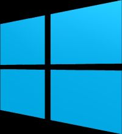

Windows
Zainstalowaliście Windows 10, ale brakuje Wam gier, które przypisano systemowo do Windows 7? Można je bez większych problemów przywrócić! Premiera Windows 10 przyniosła w systemie sporo zmian na lepsze, ale nie da się ukryć, że sporą część użytkowników rozczarował stosunkowo niewielki wybór preinstalowanych gier...
Linux
Korzystanie z linuksowego systemu operacyjnego do gier może wydawać się wyrafinowaną formą masochizmu. Nie tylko liczba dostępnych na „pingwina” gier jest znacznie mniejsza niż na Windowsa, ale też i zwykle wydajność sterowników grafiki nie jest tak duża, a dodatkowych narzędzi do optymalizacji, streamingu czy konfigurowania gamingowego sprzętu praktycznie nie ma.
Android
Coraz częściej umilamy sobie wolny czas graniem na smartfonach i tabletach, co z racji rosnących możliwości tych urządzeń dziwić nie może. Najwięcej gier mobilnych dedykowanych jest platformie Google Android. Obecnie bawić można się tu przy hitach, jakie kilka lat temu ogrywaliśmy na PC - GTA: San Andreas czy Fahrenheit.